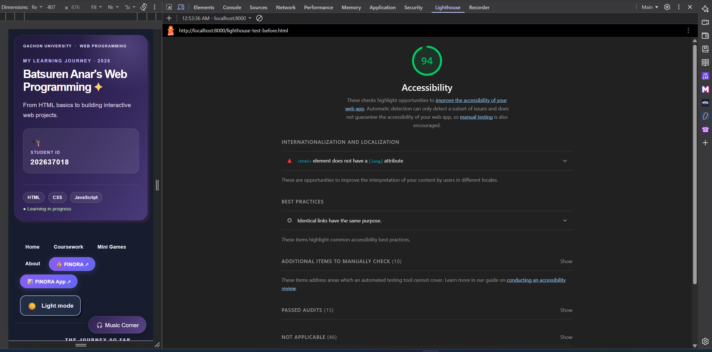
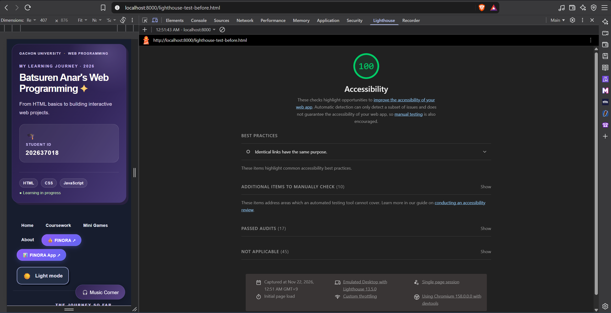
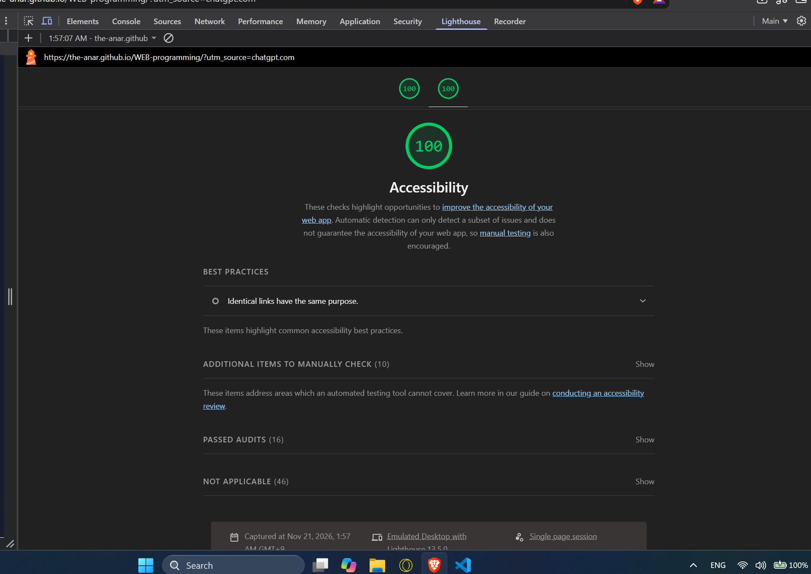
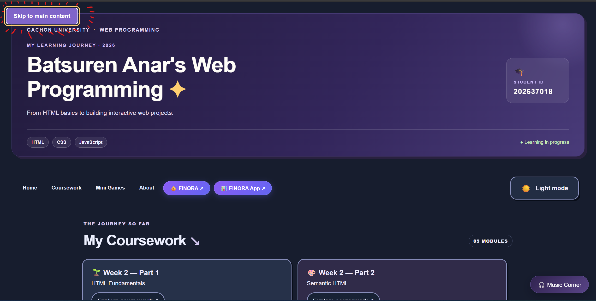

Lighthouse Accessibility Audit
A before-and-after accessibility comparison using real Chrome Lighthouse test results.
Student: Batsuren Anar · Student ID: 202637018
1. Objective
The purpose of this exercise is to evaluate website accessibility using Google Chrome Lighthouse, identify an accessibility issue, correct it, and compare the results before and after the correction.
Lighthouse checks automatically detectable accessibility practices. A score of 100 does not guarantee that every aspect of a website is accessible, so manual testing is also important.
2. Audit Method
- Created a separate local test copy of my portfolio page.
- Opened the test page through a local HTTP server in Chrome.
- Opened Chrome DevTools and selected the Lighthouse panel.
- Selected Accessibility and Desktop mode.
- Ran the first audit and recorded the result.
- Corrected the missing HTML language declaration.
- Reloaded the same URL and ran Lighthouse again.
- Compared the two actual audit results.
Tool details: Lighthouse 13.5.0 · Chromium 158.0.0.0 · Emulated Desktop.
3. Test Page
The audit comparison used a separate local test copy of my portfolio page.
Same URL for both audits: http://localhost:8000/lighthouse-test-before.html
The published portfolio was not modified to create the initial test condition. The missing language declaration was introduced only in the separate local test copy.
4. Before-and-After Comparison
16 passed audits
Missing HTML language attribute
17 passed audits
HTML language attribute restored
The Accessibility score increased by 6 points after correcting the missing language declaration.
Before: Initial Test Result
The first audit reported an Accessibility score of 94.
Lighthouse identified that the HTML element did not
have a lang attribute.
Without this declaration, screen readers may use the user's default language instead of the language used by the page.

After: Corrected Test Result
I corrected the opening HTML element by adding
lang="en":
<html lang="en">
I saved the file, refreshed the same local test URL, and ran Lighthouse again. The second audit reported an Accessibility score of 100, with 17 passed audits.

5. Published Portfolio Audit
I also performed an audit of my published portfolio. Its original Lighthouse result showed an Accessibility score of 100/100, with 16 passed audits and zero failed automated audits.
This is a separate result from the local before-and-after experiment above.

6. Manual Accessibility Testing
Automated Lighthouse results do not cover every aspect of accessibility. I also tested keyboard navigation on my published portfolio using the Tab key.
Skip to Main Content
During manual testing, I checked whether keyboard users could access a skip link to jump directly to the main content. I added a "Skip to main content" link and connected it to the main content section.
After implementing the change, I refreshed the published portfolio and pressed Tab. The skip link appeared when focused and allowed keyboard users to move to the main content.

Manual Review Items
Lighthouse also listed 10 items for manual review. These items require additional human testing and should not automatically be considered passed because of a perfect automated score.
7. Reflection
This exercise helped me understand how Lighthouse identifies accessibility problems and how a small HTML change can affect an audit result.
I learned that the HTML language declaration is important because it helps assistive technologies interpret the language of page content correctly.
I also learned that a perfect Lighthouse score is not a guarantee of complete accessibility. Manual keyboard testing and additional accessibility checks are still necessary.
8. Submission Checklist
- Separate local test copy created.
- Same local URL used for both Lighthouse audits.
- Actual before score and issue recorded.
- HTML language declaration corrected.
- Actual after score recorded.
- Before and after Lighthouse screenshots included.
- Published portfolio audit included separately.
- Manual keyboard accessibility test performed.
- Skip link implemented and verified.